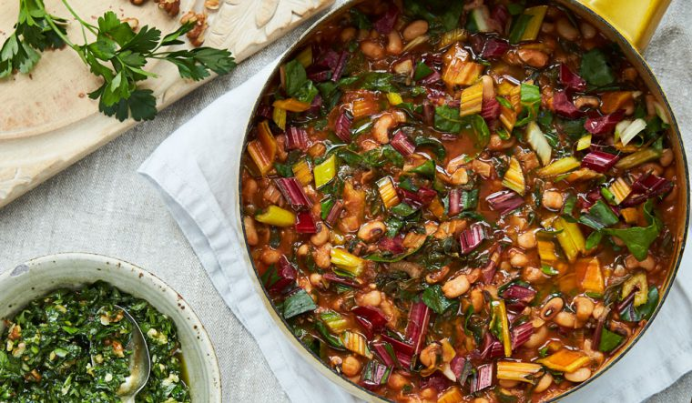

Bean Stew

Anna Jones' Black-Eyed Beans with Chard and Green Herb Smash
A simple, delicious and hearty plant-based dish that serves 4 people.
Ingredients
For the bean stew
- 1 leek
- 1 tablespoon coconut oil or olive oil
- 2 cloves of garlic
- a good pinch of chilli powder or chopped dried chilli
- 2 × 400g tins of black-eyed beans
- 1 teaspoon vegetable stock powder, or 1⁄2 a stock cube
- 250ml of passata
- a good grating of nutmeg
- ½ a teaspoon of ground cinnamon
- 1⁄2 an unwaxed lemon
- 200g bunch of Swiss or rainbow chard
For the herb smash
- A small bunch of fresh coriander
- A small bunch of fresh parsley
- 2 green chillies
- 2 cloves of garlic
- 30g shelled walnuts
- 1 tablespoon runny honey or maple syrup
- 2 tablespoons good olive oil
- the juice of 1⁄2 a lemon
Steps
- Put a large saucepan on the heat.
- Wash and finely slice the leek. Add to the saucepan with a tablespoon of coconut or olive oil and cook for a couple of minutes until soft and sweet.
- Finely slice the garlic and add to the pan with the chilli powder or dried chilli and cook for a couple of minutes, until the garlic is beginning to brown.
- Add the black-eyed beans with their liquid, the stock powder or cube, 200ml hot water and the passata and bring to a simmer.
- Grate in the nutmeg and add the cinnamon, squeeze in the juice of half the lemon, add the squeezed lemon half to the pan and simmer for 10 minutes or so.
- Meanwhile, strip the leaves from the chard stalks. Finely slice the stalks and add them to the pan, then finely shred the leaves and put to one side.
- Put all the ingredients for the herb smash into a food processor, squeeze in the juice of the other half of the lemon and blitz until you have a smooth grassy paste. Season well with salt and pepper.
- Once the black beans are soft and flavourful and the liquid has reduced to a thick soup-like consistency, stir in the chard leaves, season well with salt and pepper and leave to cook for a couple of minutes.
- Scoop into deep bowls and spoon over the herb smash. If you’re really hungry, some rice or flatbread would go well.
Home